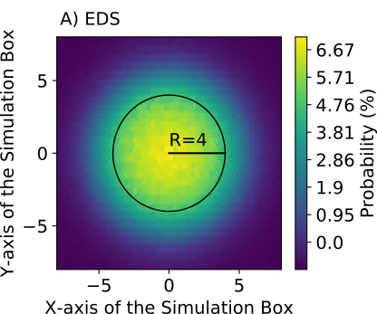
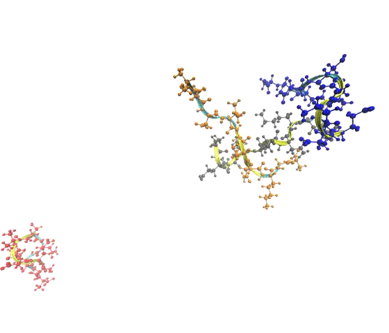

Home
Research
Teaching
Publications
Awards
CV
Research
HOOMD-TF. Details are given
here

Experiment Directed Simulations of Amyloid Peptide 21-30 fragment.

Zwitterionic Peptide Simulations
Experiment Directed Simulations of GYG peptide. Details can be found
here
.